さて、本堂のあるエリアに戻ろう。
本堂は↓中央付近、丁度木の陰に隠れている赤い建物。九層の萬佛塔や東屋も見えますね。
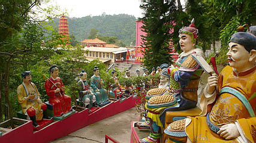
まずは本堂(萬佛殿）に参拝。
相変わらず中央に月溪法師のミイラが鎮座。
萬佛寺の創始者である。
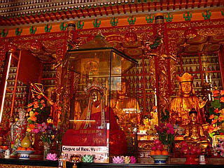
三方の壁面には一万体を越えるミニ仏像。
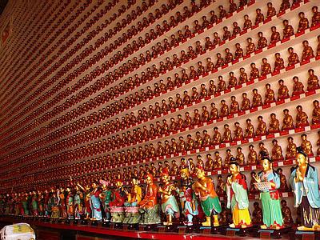
その数に圧倒される。
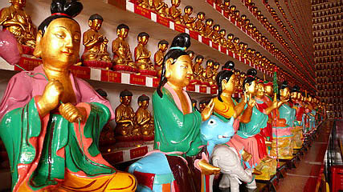
本堂から外を見る。
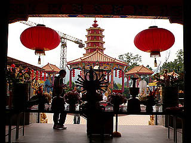
本堂前左右には金ぴか羅漢サマが並んでいる。
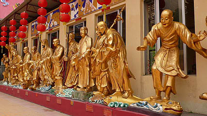
異様に手の長い羅漢サマと足の長い羅漢サマも御健在。
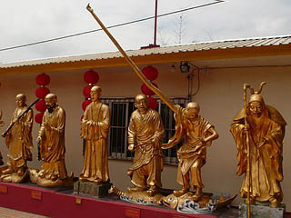 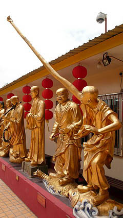 手の長い人は佛陀難提尊者というお名前。
手が長いだけじゃなくて逆関節じゃね？
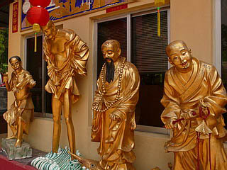 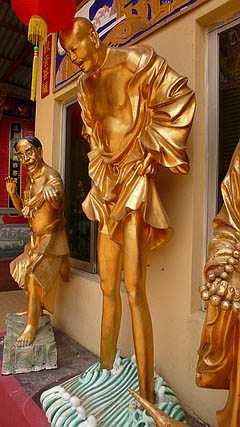 こちらの足の長い方は解空無垢尊者。
以前来た時は萬佛塔の裏手にあったこの羅漢さんたち。確実にポジションチェンジを行っている。
というより、以前訪れた時期が水害の影響もあって緊急措置的な配置をとっていたのかもしれない。
この佛陀難提尊者と解空無垢尊者、羅漢図などで見る限りごくごく普通の姿である。
何故この萬佛寺においてのみこの二人の羅漢尊者は異様な姿をしているのだろうか？
理由は全くもって判らないが、実は我が国にこの二人によく似た神様がいる。
その名もずばり手長足長。
主に西日本に伝わる伝説の妖怪である。
かつては生人形の見世物などでもよく作られたようで、比較的有名な妖怪だったようだ。
ええと、確か境港の水木しげるロードにもいたような気がします。あと飛騨高山の橋の欄干にも。
ただし、日本の手長足長はミラクルカンフー阿修羅のように二人一組で登場するものであって、ここの羅漢さんのようにそれぞれが独立して登場しているわけではないので直接関係はないのかもしれないが気になる存在ではある。
その他色々な羅漢さんがいたが、ここでは魚介類にライドするのが流行っているようですね。
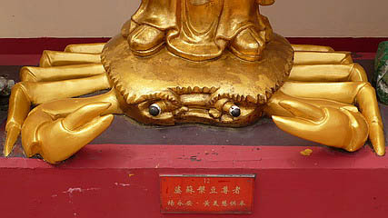
こちらのお方の眉毛ったら白髪三千丈ならぬ白眉三千丈。
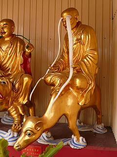
壁面にはザックリとした感じのレリーフがあって、羅漢さんのマヌケっぷりに華を添えてます。
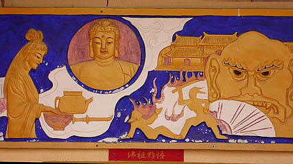
周辺にある墓地や先程訪れた納骨堂には結構人が来ているが、寺の境内自体は閑散としている。
香港社会におけるこの寺の立ち位置を如実に物語っているような気がしてならない…
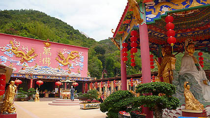
萬佛塔の前にある四面仏。
何故か香港澳門台湾にはこの泰国渡来の四面仏が人気だ。
しかも仏教神というよりは民間信仰神のようだ。
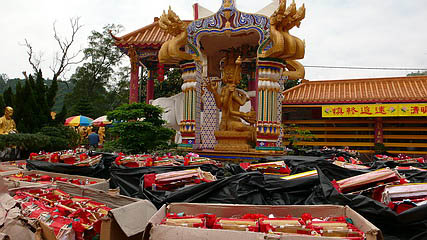
その四面仏の周辺にはダンボール箱の中に紙で出来た飾り物が満載。
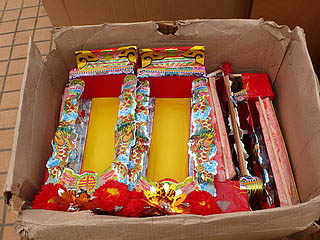
清明祭の供え物なのだろう。
閑散とした境内だがココだけはちょっとホットだった。
以前は入れなかった塔に登ってみる。
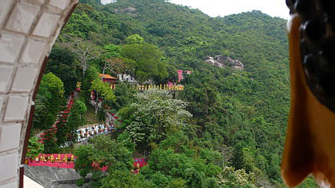
眼下には先程訪れた金ぴか羅漢&六十甲子&金ぴか観音ロードが。
境内を見下ろすとこんな感じ。
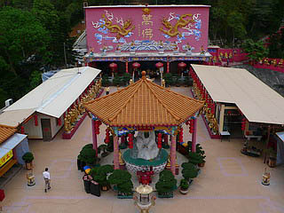
一万数千の仏様に対して片手でカウント出来ちゃう参拝客って…
塔の裏には大きな千手観音。まるでバッサバッサっと飛んでいきそうな勢いである。
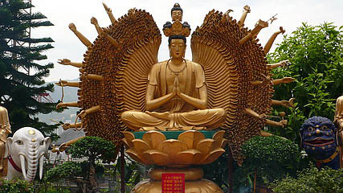
両脇には文殊普賢菩薩が。
獅子の顔やばいす。
そんなこんなで先程の金ぴか羅漢道とは逆サイドの道を下っていく。
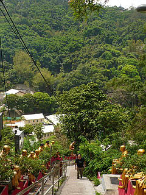
以前はほとんどなかったが、今では結構な数の金ぴか羅漢さんが並んでいる。
正直、相当お金かかってるんだろうなあ～。
この閑散とした寺のどこにそんな底力があるのだろう？
こちらサイドはまだ完成しておらず、生活感満点の民家の庭先と庭先の間を通ったりするのが面白い。
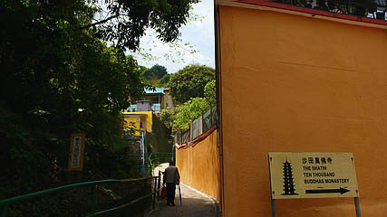
山あいのひっそりとした、香港らしくない静謐な雰囲気の場所だった。
次の珍寺へGO！
珍寺大道場 HOME